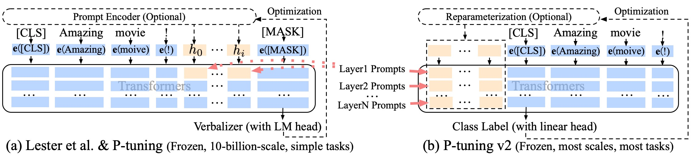

Chatglm 官网
官方主页
官方社区
常用命令
tar
- 参数
-xvzf: 用于解压缩一个 gzip 压缩的 tar 文件其中，-x 表示解包，-v 表示显示详细的解包过程，-z 表示解压缩 gzip 压缩，-f 表示指定要解压缩的文件名例如，tar -xvzf archive.tar.gz 将解压缩名为 archive.tar.gz 的 gzip 压缩的 tar 文件 - 参数
-cvzf: 用于压缩创建一个 gzip 压缩的 tar 文件其中，-c 表示创建归档文件，-v 表示显示详细的打包过程，-z 表示使用 gzip 压缩，-f 表示指定要创建的文件名例如，tar -cvzf archive.tar.gz folder/ 将创建名为 archive.tar.gz 的 gzip 压缩的 tar 文件，其中包含名为 folder 的目录下的所有文件和子目录 - 样例：
1
2tar -cvzf env.tar.gz anaconda3/envs/chatglm_tan # 压缩
tar -xvzf env.tar.gz -C anaconda3/envs/chatglm_tan # 解压缩
示范流程
74 30/06/23 09:05:40 tar -xvzf ChatGLM-Efficient-Tuning.tar.gz
88 30/06/23 09:09:37 tar -xvzf env.tar.gz
95 30/06/23 09:34:58 slist
96 30/06/23 09:35:08 sinfo
97 30/06/23 09:35:54 conda activate chatglm_etuning
118 30/06/23 10:35:01 pip install deepseed
125 30/06/23 10:55:45 accelerate config
126 30/06/23 10:56:27 vim ~/.bashrc
127 30/06/23 11:01:06 vim /gs/home/zhangzhibo/anaconda3/envs/chatglm_etuning/bin/accelerate
128 30/06/23 11:01:34 accelerate config
129 30/06/23 11:03:06 vim run.slurm
130 30/06/23 11:03:15 sbatch run.slurm
131 30/06/23 11:03:21 ls
132 30/06/23 11:03:27 cat glm2.out
133 30/06/23 11:03:33 tail -100f glm2.out
134 30/06/23 11:03:37 tail -100f glm2.err
135 30/06/23 11:03:57 conda init bash
136 30/06/23 11:04:08 vim run.slurm
137 30/06/23 11:05:48 scancel 8138036
138 30/06/23 16:55:17 vim run.slurm
139 30/06/23 16:55:52 conda activate chatglm-etuning
140 30/06/23 16:55:58 conda info —envs
145 30/06/23 16:56:34 sbatch run.slurm
146 30/06/23 16:56:47 tail -100f glm2.out
147 30/06/23 16:56:51 tail -100f glm2.err
161 30/06/23 17:06:18 tail -f glm2.out glm2.err
CHATGLM - 6B 模型参数微调
模型地址
https://github.com/THUDM/ChatGLM-6B
P-Tuning v2
简介
P-Tuning是一种较新的模型微调方法，它采用了参数剪枝的技术，可以将微调的参数量减少到原来的0.1%。具体来说，P-Tuning v2是基于P-Tuning v1的升级版，主要的改进在于采用了更加高效的剪枝方法，可以进一步减少模型微调的参数量。
P-Tuning v2的原理是通过对已训练好的大型语言模型进行参数剪枝，得到一个更加小巧、效率更高的轻量级模型。具体地，P-Tuning v2首先使用一种自适应的剪枝策略，对大型语言模型中的参数进行裁剪，去除其中不必要的冗余参数。然后，对于被剪枝的参数，P-Tuning v2使用了一种特殊的压缩方法，能够更加有效地压缩参数大小，并显著减少模型微调的总参数量。
总的来说，P-Tuning v2的核心思想是让模型变得更加轻便、更加高效，同时尽可能地保持模型的性能不受影响。这不仅可以加快模型的训练和推理速度，还可以减少模型在使用过程中的内存和计算资源消耗，让模型更适用于各种实际应用场景中。
对于 ChatGLM-6B 模型基于 P-Tuning v2 进行微调。可将需要微调的参数量减少到原来的 0.1%，再通过模型量化、Gradient Checkpoint 等方法，最低只需要 7GB 显存即可运行。

官方论文
https://arxiv.org/pdf/2110.07602.pdf
查看
文件组织
ChatGLM/ptuning/
├── arguments.py - 定义了模型、数据和训练相关参数的类
├── deepspeed.json - Deepspeed配置文件
├── ds_train_finetune.sh - 使用Deepspeed进行微调的shell脚本
├── evaluate_finetune.sh - 用于评估微调后的模型的shell脚本
├── evaluate.sh - 用于评估模型的shell脚本
├── main.py - 解析命令行参数并调用相应的训练或预测逻辑
├── README.md
├── README_en.md
├── trainer.py - 定义了模型训练和验证的主要逻辑
├── trainer_seq2seq.py - 继承自trainer.py，用于处理序列到序列模型的训练和验证
├── train_chat.sh - 用于训练chat模型的shell脚本，它调用main.py并传递一些参数来启动训练过程
├── train.sh - 用于训练模型的shell脚本
├── web_demo.py - Web Demo的主要逻辑
└── web_demo.sh - 启动Web Demo的shell脚本
安装依赖
运行微调需要 4.27.1 版本的 transformers
pip install rouge_chinese nltk jieba datasets
训练数据集
官方样例数据集
官方微调样例是以 ADGEN (广告生成) 数据集为例来介绍微调的具体使用。
ADGEN 数据集为根据输入（content）生成一段广告词（summary），具体格式如下所示：
1 | { |
将 ADGEN 数据集放到 ptuning 目录下并将其解压到 AdvertiseGen 目录
自己的数据集
修改 train.sh 和 evaluate.sh 中的 train_file、validation_file和test_file为你自己的 JSON 格式数据集路径，并将 prompt_column 和 response_column 改为 JSON 文件中输入文本和输出文本对应的 KEY
参数详解
1 | # ptuning/main.py |
在以上代码中可知，原参数分为三种，分别为ModelArguments（模型相关参数）、DataTrainingArguments（数据相关参数）和Seq2SeqTrainingArguments（训练相关参数）
arguments.ModelArguments
用于指定模型的参数
model_name_or_path(str):- 描述：预训练模型或模型标识符的路径，可以是 huggingface.co/models 上的模型。
- 默认值：无
ptuning_checkpoint(str):- 描述：p-tuning v2 检查点的路径。
- 默认值：None
config_name(Optional[str]):- 描述：预训练配置的名称或路径，如果不同于
model_name_or_path。 - 默认值：None
- 描述：预训练配置的名称或路径，如果不同于
tokenizer_name(Optional[str]):- 描述：预训练 tokenizer 的名称或路径，如果不同于
model_name_or_path。 - 默认值：None
- 描述：预训练 tokenizer 的名称或路径，如果不同于
cache_dir(Optional[str]):- 描述：存储从 huggingface.co 下载的预训练模型的目录。
- 默认值：None
use_fast_tokenizer(bool):- 描述：是否使用由 tokenizers 库支持的快速 tokenizer。
- 默认值：True
model_revision(str):- 描述：要使用的具体模型版本（可以是分支名称、标签名称或提交 ID）。
- 默认值：”main”
use_auth_token(bool):- 描述：是否使用运行
huggingface-cli login时生成的令牌（用于使用私有模型）。 - 默认值：False
- 描述：是否使用运行
resize_position_embeddings(Optional[bool]):- 描述：是否在
max_source_length超过模型位置嵌入时自动调整位置嵌入大小。 - 默认值：None
- 描述：是否在
quantization_bit(Optional[int]):- 描述：量化的位数。
- 默认值：None
pre_seq_len(Optional[int]):- 描述：预处理的序列长度。
- 默认值：None
prefix_projection(bool):- 描述：是否对输入文本应用前缀投影。
- 默认值：False
arguments.DataTrainingArguments
用于指定训练和评估数据的参数
lang(Optional[str]):- 描述：摘要的语言 ID。
- 默认值：None
dataset_name(Optional[str]):- 描述：要使用的数据集名称（通过 datasets 库）。
- 默认值：None
dataset_config_name(Optional[str]):- 描述：要使用的数据集配置名称（通过 datasets 库）。
- 默认值：None
prompt_column(Optional[str]):- 描述：数据集中包含完整文本的列名（用于摘要）。
- 默认值：None
response_column(Optional[str]):- 描述：数据集中包含摘要的列名（用于摘要）。
- 默认值：None
history_column(Optional[str]):- 描述：数据集中包含聊天历史的列名。
- 默认值：None
train_file(Optional[str]):- 描述：输入的训练数据文件（jsonlines 或 csv 文件）。
- 默认值：None
validation_file(Optional[str]):- 描述：用于评估指标（rouge）的可选输入评估数据文件（jsonlines 或 csv 文件）。
- 默认值：None
test_file(Optional[str]):- 描述：用于评估指标（rouge）的可选输入测试数据文件（jsonlines 或 csv 文件）。
- 默认值：None
overwrite_cache(bool):- 描述：是否覆盖缓存的训练和评估集。
- 默认值：False
preprocessing_num_workers(Optional[int]):- 描述：用于预处理的进程数。
- 默认值：None
max_source_length(Optional[int]):- 描述：标记化后的最大输入序列长度。超过此长度的序列将被截断，较短的序列将被填充。
- 默认值：1024
max_target_length(Optional[int]):- 描述：标记化后的目标文本的最大序列长度。超过此长度的序列将被截断，较短的序列将被填充。
- 默认值：128
val_max_target_length(Optional[int]):- 描述：验证目标文本的最大序列长度。超过此长度的序列将被截断，较短的序列将被填充。默认为
max_target_length。 - 默认值：None
- 描述：验证目标文本的最大序列长度。超过此长度的序列将被截断，较短的序列将被填充。默认为
pad_to_max_length(bool):- 描述：是否将所有样本填充到模型的最大句子长度。如果为 False，将在批处理时动态地将样本填充到批次中的最大长度。在 GPU 上更高效，但对 TPU 来说非常低效。
- 默认值：False
max_train_samples(Optional[int]):- 描述：为调试或更快的训练而将训练示例的数量截断到该值。
- 默认值：None
max_eval_samples(Optional[int]):- 描述：为调试或更快的训练而将评估示例的数量截断到该值。
- 默认值：None
max_predict_samples(Optional[int]):- 描述：为调试或更快的训练而将预测示例的数量截断到该值。
- 默认值：None
num_beams(Optional[int]):- 描述：用于评估的 beam 数。此参数将传递给
model.generate，用于evaluate和predict。 - 默认值：None
- 描述：用于评估的 beam 数。此参数将传递给
ignore_pad_token_for_loss(bool):- 描述：是否在损失计算中忽略与填充标签对应的令牌。
- 默认值：True
source_prefix(Optional[str]):- 描述：在每个源文本之前要添加的前缀（适用于 T5 模型）。
- 默认值：””（空字符串）
forced_bos_token(Optional[str]):- 描述：在
decoder_start_token_id之后强制作为第一个生成的令牌的令牌。对于类似 mBART 的多语言模型很有用，其中第一个生成的令牌需要是目标语言令牌（通常是目标语言令牌）。 - 默认值：Nones
- 描述：在
Seq2SeqTrainingArguments
- 此类为transformers库中的Seq2SeqTrainingArguments类，用于指定训练相关的参数，具体参数可参考transformers库中的Seq2SeqTrainingArguments类的注释
具体.sh代码解析
train.sh
1 | # ptuning/train.sh |
evaluate.sh
1 | # evaluate.sh |
by Tan